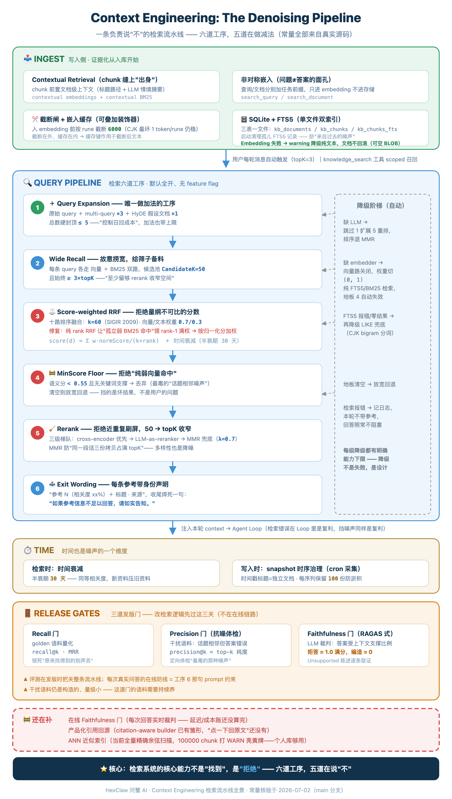
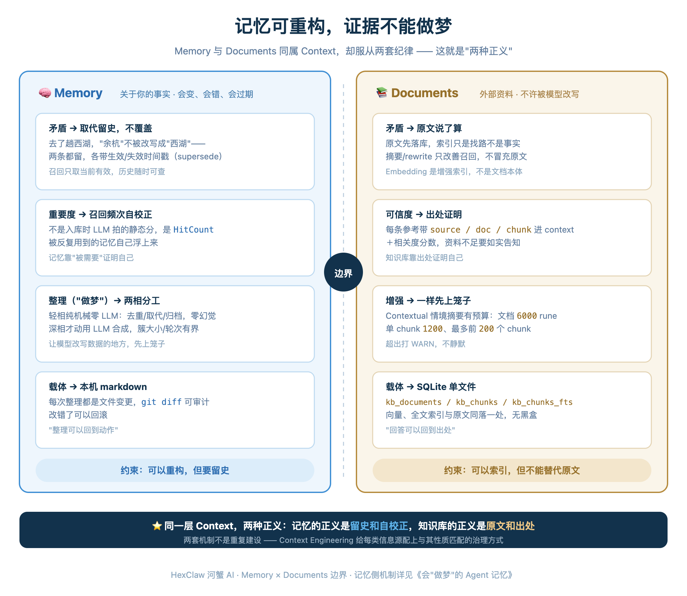

You have probably seen this kind of answer: an agent solemnly lists “Reference 1 (relevance: 61%),” complete with title and source, then gives a wrong answer based on it. That is more damaging than an unsupported hallucination. You might doubt a bare assertion, but a wrong answer that appears sourced can make you drop your guard. Often, the model has not invented anything. Retrieval served material on a neighboring topic that did not contain the answer, and the model faithfully digested what it was fed.
In the previous article, I opened up HexClaw’s Loop layer: the loop runs itself, a supervisor checks progress against the goal, and another round is dispatched if it falls short. Afterwards, the next topic was obvious. Once the loop starts, an inconspicuous problem becomes systemic: every iteration consumes context. Noise causes one wrong answer in a conversation; in a loop, that mistake becomes input to the next planning round. It compounds.
The industry already has a name for this perspective: Context Engineering. Several prominent practitioners popularized it in the middle of last year, and by now the term is nearly overused. At first, I dismissed it as another round of jargon inflation. After working through HexClaw’s entire knowledge-base path, I admitted it described exactly what I was doing. Shopify CEO Tobi Lütke, among the early executives to put “AI first” into a company-wide memo, offered a useful definition: “the art of providing all the context for the task to be plausibly solvable by the LLM.” The more widely circulated formulation came from OpenAI founding member and former Tesla AI director Andrej Karpathy:
“Context engineering is the delicate art and science of filling the context window with just the right information for the next step.”
The emphasis is on supplying precisely the information the next step needs.
Notice that neither says “feed it more.” Anthropic’s engineering blog makes the point more explicit: context is scarce, and the goal is “the smallest possible set of high-signal tokens.”
Recent empirical work supports that direction. Chroma calls the deterioration as input grows Context Rot: more tokens reduce a model’s ability to retrieve information accurately from its context. Following that evidence, Anthropic describes attention as a budget; every added token spends some of it. Liu et al.’s Lost in the Middle had already identified a U-shaped drop in utilization across long contexts. For RAG builders, the most uncomfortable result is SIGIR 2024’s The Power of Noise: random irrelevant documents are almost harmless; the documents that damage accuracy are distractors on neighboring topics that do not contain the answer—exactly the kind vector retrieval tends to return.
This article therefore will not boast about RAG recall. Most RAG articles explain how to retrieve more. Here I will describe the opposite, where I spent much of my effort in HexClaw’s knowledge-base source: how to discard more decisively. We will examine six stages. With one additive exception, they subtract: reduce weights, set a floor, remove duplication, narrow candidates, and require the model to acknowledge insufficient evidence.
The point I most want you to take away is that retrieval’s core capability includes refusal. A production RAG path is a pipeline responsible for saying no. Every place it says no corresponds to a real failure mode.
Prompt(finale) → Context ▸ This article → Harness(next) → Loop(overview · published)
The other half of Context is memory; see Agent Memory That Dreams
Overview: six stages, a complete degradation ladder, and three evaluation gates. Every constant comes from the source; none was invented.

Where the pipeline lives: a gate on every conversation turn
First, its position. When the HexClaw engine handles any user message, it performs a fixed step numbered 5.5 in the source comments: “Knowledge-base retrieval (RAG context augmentation).” Whenever the knowledge base is enabled, the current message runs through kb.Query(), executing the entire retrieval path. Default topK is 3, and retrieved content is injected as context for that turn. A retrieval failure is logged but never blocks the answer. A failure in the reference layer should not interrupt the conversation. This is the first subtraction: omit references for a turn rather than turn a retrieval error into an answering error.
Alongside that automatic per-turn path, the agent can explicitly call knowledge_search. Source comments distinguish their roles: automatic injection searches the entire knowledge base every turn; the tool is for model-initiated scoped recall, filtered by source, type, or date—for example, “only the PDFs I uploaded” or “only what I saved last week.” Filters are pushed down to storage. One path runs in the background; the other is a deliberate search.
One filtering detail shows the care involved. Source and type conditions are pushed into storage before topK selection. Retrieving topK from the entire store and filtering afterwards could silently omit truly matching documents that never reached the candidate pool. Date filtering is deliberately not pushed down. SQLite stores dates as RFC3339 text, and lexicographic comparisons across time zones are unreliable. The code instead compares real time.Time values in Go, with the reason explained in a comment. Different conditions need different treatments. Such details distinguish considered code from a copied recipe.
The source summarizes the full sequence in one line: query expansion → broad retrieval → RRF fusion → relevance floor → LLM reranking. There is no feature-flag gate; default configuration enables everything, and missing components automatically degrade only the relevant stages. We will return to that “best practice by default” choice.
Stage zero: noise prevention starts at ingestion
Retrieval quality is partly determined before querying. Common upload formats enter a shared backend extraction path: PDF uses Poppler’s pdftotext, with complete ToUnicode handling to address garbled Chinese; legacy .doc uses system tools; images go to a vision model for transcription into searchable text. The latest work extends that path inside documents: scanned PDF pages and images embedded in Word—screenshots, charts, and formulas—are extracted individually and transcribed by a VLM. A “Document visual parsing” section merges those results into the indexed text. Two details matter: visual transcription reuses the knowledge base’s configured vision model rather than creating a separate upload-only call path; when no vision model is configured, ingestion honestly indexes only the text layer and explicitly warns that image semantics were not indexed. A broader entrance still follows the same downstream rules.
The first cut after ingestion is chunking. It can look like mechanical character counting, but it defines the smallest unit of evidence that can be referenced. Too small, and the model loses surrounding reasoning; too large, and unrelated text dilutes vector similarity, yielding blocks with only vaguely relevant content. HexClaw uses structure first, recursive splitting as a fallback: follow heading hierarchies when present, otherwise split recursively. Defaults are 400 characters per chunk and 80 characters of overlap, preserving meaning across boundaries. This is particularly useful for naturally structured text such as contracts and patents: clauses and claims are evidence units, so structure-aware cuts support references to a specific clause rather than an amorphous block. The first measure below restores global context lost at those cuts.
After chunking, the pipeline does three less conspicuous things.
First, attach provenance to every chunk. A document-level context prefix—its heading path plus an optional LLM-generated contextual summary—is prepended to each chunk. Both vector embeddings and the BM25 full-text index use this augmented text. This is Anthropic’s Contextual Retrieval: contextual embeddings plus contextual BM25. Their reported results reduce top-20 retrieval failure by 49%, or 67% with reranking. It solves a concrete problem: an isolated chunk saying “This setting defaults to 30 days” does not identify the system or setting. Its added background helps correct semantic and lexical queries find it and reduces mistaken matches. The contextual-summary calls have their own budget: at most 6000 runes of document text, 1200 runes per chunk, and summaries for only the first 200 chunks of a document. Exceeding that produces a WARN rather than silence. Even the enhancement has cost bounds.
Second, queries and documents enter vector space with different roles. For embedding models supporting task prefixes, such as the nomic family’s search_query and search_document, query and document inputs receive different instruction prefixes. Questions and answers need not have the same shape in semantic space; asymmetric embeddings align the direction of “question seeking answer” more accurately. Prefixes affect only embedding inputs, without contaminating stored content or BM25.
Third, truncate at the embedding API entrance. Any text is truncated to 6000 runes before embedding. Even for a worst-case CJK estimate of about 1 token per rune, that stays below mainstream embedding models’ 8191/8192-token limits. A normal 400-character chunk never reaches it; the guard addresses unexpectedly long queries, HyDE hypothetical documents, or an accidentally supplied full article, avoiding a 413 error or excessive billing. Truncation and embedding caching are stackable decorators. The recommended order is truncation outside, cache inside, so cache keys use truncated text. Repeated ingestion of the same long document then does not miss the cache because truncation happened at a different point. Even decorator order marks the difference between engineering and a demo.
Storage is SQLite with an FTS5 virtual table. There is no separate vector database: vectors and full-text indexes live in the same local file. Startup also removes orphaned FTS5 rows whose chunks have already been deleted, preventing removed material from reappearing in results. That, too, prevents noise—noise from the past.
Stages one and two: even the additive stage has limits
Only the first stage adds material: query expansion. Original questions are often short and conversational, so direct retrieval misses things. HexClaw runs three branches concurrently: retain the original query, generate 3 multi-query semantic variants, and add HyDE—a hypothetical answer written by an LLM and used as a search query. Questions and answers differ in vector space, while hypothetical and real answers resemble one another. The total is hard-capped at 5 queries. The source’s reason is simply “control retrieval cost.” Restraint applies even where the pipeline adds.
Broad retrieval follows. Each query takes a vector-search path and a BM25 full-text path. The candidate pool is CandidateK = 50, always at least 3 times the final topK, “leaving enough room for rerank narrowing,” as the comment puts it. This is classic over-retrieval: deliberately cast a wide net so later subtraction stages have something to work with.
Stage three: fusion, and a real bug it had to fix
There are now up to ten ranked lists: 5 queries × vector and text paths. Their score units are incomparable. Cosine similarity is a continuous geometric measure; BM25 is a term-frequency statistic. A direct weighted sum resembles adding temperature to atmospheric pressure. A standard answer is RRF, Reciprocal Rank Fusion (Cormack et al., SIGIR 2009): rely on rank rather than raw score, with each list contributing 1/(k+rank), using the conventional k of 60. The constant and paper citation appear directly in the configuration-field comment.
HexClaw uses score-weighted RRF, because textbook RRF failed in real use. Here is the complete problem. Rank-only RRF grants full rank-1 weight to a single weak hit isolated in one list. Cross-language queries can produce exactly this: ask in Chinese about an English document, with almost no lexical overlap, and BM25 may find a single accidentally shared token. Its score is tiny, but it ranks first on that path. Pure RRF can let this false lexical hit outrank a genuinely strong semantic vector hit. The fix multiplies each rank contribution by the normalized score from its own path:
The core fusion logic, slightly shortened for layout; comments are reproduced from the source.
The effect works both ways: weak hits with low normalized scores lose the corresponding share of their rank advantage, while genuine exact matches—for example, a function-name search receiving a near-perfect BM25 score—retain full weight. The closing source comment is precise: “Eliminate false-hit bias without losing exact-term matching capability.” A 30-day-half-life time decay is then applied to fused scores, preferring newer material when relevance is equal.
Stages four, five, and six: a floor, reranking, and output instructions
After fusion comes the clearest gate: the relevance floor. Candidates with vector similarity below 0.55, applied to cosine scores normalized into 0–1, and no supporting keyword hit are discarded. The source calls these “pure weak vector hits”: the semantic model sees a vague resemblance, while lexical matching supplies no evidence. This is exactly the dangerous distractor pattern discussed in The Power of Noise. The entire condition is short enough to show:
Notice lines 8–10: if the floor removes every candidate, it relaxes and returns the original results. Even refusal has a boundary. The floor excludes bad entries mixed with good ones, rather than rejecting the user’s entire question. Prefer fewer, more accurate results, but do not leave none.
Surviving candidates are sorted by fused score and limited to a 50-entry reranking pool. There are three levels: prefer a dedicated cross-encoder reranker for speed, cost, and accuracy; otherwise reuse the chat model as an LLM reranker that scores each entry’s relevance; without an LLM, fall back to MMR diversity selection with λ=0.7. MMR addresses another noise pattern: near-duplicate chunks occupying the entire topK. If three documents contain the same passage and all score highly, selecting all three spends three times the tokens for one piece of information. Diversity also removes noise.
The sixth and last stage is the output wording. Retrieved text is not simply concatenated into context. Each entry declares “Reference N (relevance: xx%) + document title · source,” and the injected block always ends with:
“Answer the user’s question based on the reference information above. If the references are insufficient to answer it, say so honestly.”
That sentence is the online pipeline’s last defense. The first five stages choose what to feed; this one governs how to answer afterwards. It is a prompt-level constraint with limited strength. We will account for that in the release-gates section.
Degradation is part of the design
This degradation philosophy began with something concrete. The first knowledge-base obstacle was not a complex algorithm, but one error line:
On the surface, Ollama was simply missing an embedding-model download. Pulling it would fix the immediate error. But it exposed a system boundary: why should a knowledge base refuse to accept documents just because no embedding model is installed? If successful vectorization is the first admission requirement, it is still a vector-search demo rather than a knowledge base.
The first rung of the degradation ladder therefore sits on the write side: persist the original document and its chunks, and make the FTS5 index usable first. The embedding field is a nullable BLOB. A configured model can add vectors; failures only emit warnings and fall back to text indexing. The document is never rolled back. A unique constraint on (doc_id, chunk_index) also prevents repeated index rebuilds from piling up chunks at the same position. Embeddings enhance the index; they are not the document itself.
The query-side ladder continues from there:
▸ No LLM, for example embeddings configured without a chat model: automatically skip query expansion and LLM reranking, falling back to MMR. The path remains complete, with two enhancements absent.
▸ No embedder, including no configured models at all: disable the vector path and switch weights to text-only (0/1). Retrieval becomes FTS5 + BM25 keyword search; the relevance floor is automatically inapplicable because it exists for vector scores.
▸ FTS5 fails, because of special query characters or zero results from mismatched Chinese segmentation: fall back one level further to a LIKE scan. CJK bigrams plus retained original tokens give Chinese and code symbols a lexical representation.
▸ The floor empties the pool: relax it rather than return no results.
▸ Retrieval errors: log the failure, omit references for this turn, and continue answering.
Every rung has an explicit minimum capability and activates automatically. This reflects the same position as “best practice by default, without feature flags”: retrieval quality should not require users to study configuration manuals, and one missing model should not stop the whole system. Local software encounters widely varying environments. Its degradation ladder supplies adaptability.
The same honesty applies to capacity. Without a separate vector database, vector retrieval is a full exact cosine scan of embedding BLOBs in Go: decode each row, calculate, and discard it; vectors do not stay resident in memory. Check cancellation every 1000 rows so long scans can be interrupted. Above 100000 chunks, emit a WARN explicitly telling the user to consider an approximate index.
The tradeoff is clear: at personal-knowledge-base scale, exact scanning is more predictable than approximation. Do not sacrifice recall for premature performance optimization. When horizontal scale becomes necessary, the right evolution is not a larger threshold but replacing the index layer with ANN, such as HNSW or DiskANN, while preserving the semantics of evidence fields such as source / doc / chunk. O(n·d) is the real boundary; one hundred thousand chunks is the system’s own warning flag.
Memory is context too: two retrieval paths, two standards of correctness
HexClaw’s memory system is another source of context. Why do memory recall and knowledge-base retrieval use different mechanisms? Memory combines 0.7 vector + 0.3 BM25 scores, then incorporates recency and importance; the knowledge base uses RRF fusion and LLM reranking. Neither is inherently more advanced. The two data types demand different standards.
Memory contains a small set of valuable facts about you, on the order of hundreds. Something you said last week should generally take precedence over something from three months ago: time and importance are first-class concerns. A knowledge base seeks evidence among tens of thousands of chunks, merging up to ten heterogeneous lists to find the three truly relevant entries: noise resistance comes first. Applying one mechanism indiscriminately would be the lazy choice. This is what Context Engineering means as a layer: give each information source governance suited to its nature, rather than a single retrieval algorithm.
The earlier memory article examines its rules in full. Here are four designs that make the differing standards particularly clear:
▸ Contradictions supersede, preserving history. If you usually stay in Yuhang and mention a visit to Xihu, “current location” is a single-valued fact, so those values conflict. Many systems rewrite Yuhang as Xihu. HexClaw keeps both with valid-from and valid-to timestamps, recalls only the currently valid entry, and switches back after your return. History remains inspectable. Preserving document originals and preserving memory history are the same rigor expressed for different data.
▸ Importance corrects itself. It is not a static LLM-assigned score at ingestion; recall hits, tracked by HitCount, help frequently used memories rise. Documents demonstrate credibility through their source; memories demonstrate it through repeated need.
▸ Organization, or “dreaming,” has two phases. The light phase is mechanical, with zero LLM calls: deduplicate, supersede, promote or demote, and archive, without generating hallucinations. Only the deep phase uses LLM synthesis, with bounded cluster sizes and clusters per round. Like budgeting Contextual summaries, wherever a model rewrites data, it first receives boundaries.
▸ Everything is local Markdown, inspectable with git diff. Each maintenance action becomes an auditable, reversible file change. This mirrors the knowledge-base ideal of tracing answers to sources: memory maintenance can be traced to actions.
Those four choices follow memory’s nature: facts about you change, can be wrong, and expire. Its standard is history preservation and self-correction. Documents must not be rewritten by a model, so the knowledge base’s standard is original text and provenance. These mechanisms are not duplicate work. They make the same Context Engineering requirement—why trust it?—concrete for two sources.

The knowledge base has its own temporal governance. Besides a 30-day-half-life retrieval decay, scheduled tasks write daily collection results such as trending lists, repository stars, and monitored prices. These are time series, rather than single documents. Today’s trend list must neither overwrite yesterday’s nor let yesterday’s persist forever. Each collection receives a timestamped title and becomes an independent document, naturally supporting questions like “What was trending last Wednesday?” Each series retains its latest 100 snapshots by default, preventing an hourly task from clogging the knowledge base. Collected material becomes evidence only after governance.
Three release gates, and what has not entered the online path
Everything above describes online code executed during actual question answering. Whether the pipeline is good cannot be decided by feel. The knowledge-base source also contains three evaluation guardrails. They run as release gates, outside the online path. Retrieval changes first pass these checks:
First: recall. A fixed golden corpus and query set quantify recall@k and MRR, with fully deterministic metric calculation. This protects the baseline: has a change lost something the system previously found?
Second: precision. This directly addresses the article’s theme. A source comment identifies an industry imbalance: evaluations emphasize recall—whether relevant documents appear in top-k—while neglecting precision—how many irrelevant near-topic distractors entered top-k. A dedicated distractor corpus pairs each query with relevant documents and deliberately introduces nearby topics with wrong answers: holidays versus leave entitlements, or relational databases versus caches and message queues. It measures precision@k, the purity of top-k and the amount of distractor leakage. This is a targeted check for the dangerous noise described in The Power of Noise.
Third: faithfulness. Aligned with RAGAS, a strong model judges triples of (question, retrieved context, generated answer) on Faithfulness—the fraction of factual claims supported by context—AnswerRelevance, and ContextRelevance. It also lists individual claims it considers unsupported as evidence of possible fabrication. My favorite design in this scoring system is:
If an answer declines to answer because references are insufficient and makes no factual claims, Faithfulness is 1.0: full marks.
In this scoring system, acknowledging insufficient knowledge is maximally faithful. Fabrication gets zero.
Now the limitations. First, these are release gates, not online gates. No faithfulness judge evaluates each live answer. The final online defense is still the prompt instruction to disclose insufficient material. Moving the judge online adds latency and cost to every response; that tradeoff has not yet been resolved, so it has not been implemented.
Second, provenance currently stops at context. Titles and sources are fed to the model, but there is no finished product feature linking a specific answer sentence to reference N, with a click back to the original. A citation-aware context builder exists in embryonic form at the retrieval facade; the last product-facing part is missing. Today, the provenance is for the model to see, rather than for you to verify directly.
Finally, the distractor corpus is constructed and small. It can catch a regression that breaks noise resistance, but does not prove resistance on your real corpus. It needs continued cultivation. The 49% and 67% figures are Anthropic’s results on its own material. HexClaw does not yet have publishable comparative measurements for this pipeline; admitting that is better than filling the gap.
Here are those tradeoffs compressed into an acceptance checklist. Whether or not you use HexClaw, you can compare your own RAG system against it:
□ 2 Storing vectors without original text gives up citations, index rebuilds, and auditing at once.
□ 3 Make (doc_id, chunk_index) unique so repeated ingestion and index rebuilds cannot accumulate duplicate chunks.
□ 4 Apply filters before topK selection, or genuine matches can silently miss the candidate pool.
□ 5 BM25 and vector scores use incomparable units. Normalize them before combining, or use RRF.
□ 6 The relevance floor removes only pure weak vector hits. Preserve keyword matches, and relax the floor if it empties the pool.
□ 7 Keep at least an MMR reranking fallback so near-duplicate chunks cannot occupy all of topK.
□ 8 Evaluate more than recall. Use a dedicated corpus to measure nearby-topic distractors leaking into top-k.
Back to the loop: delegate selection to an auditable pipeline
The previous article describes four generations as a control plane moving outward. Each new layer delegates another decision. At the Context layer, you delegate information selection: what the model sees and does not see on each turn is no longer reviewed one item at a time by you.
We can now complete that statement: delegation is reasonable if you examine what receives it. Handing control to “stuff the whole store into the window” avoids the real problem. Handing it to a pipeline where every stage has a reason, constants, degradation paths, and release gates is engineering. Retrieval errors compound inside a loop. So do the benefits of every gate that keeps noise out.
The borrowed methods and locally earned solutions are distinguishable. Contextual Retrieval, RRF, HyDE, and RAGAS build on public practice. The score-weighted RRF fix, CJK-bigram plus LIKE lexical fallbacks, “refusal gets full marks” scoring, snapshot governance for scheduled collections, and history-preserving supersession with two-phase memory dreaming came from problems encountered in this system. Engineering earns its identity by explaining each tradeoff, without needing to invent a new paradigm.
Two generations remain in the series. Next comes Harness. The dictionary’s literal meaning is the equipment fitted to a working animal, and this series already calls an agent a “cyber workhorse.” That connection is the next article’s theme: the model supplies intelligence; the harness supplies the confidence to let it work. We will return to it next. Prompt closes the series.
Four Generations series
▸ Loop · Overview Inspecting an open-source agent, layer by layer from Prompt to Loop
▸ Context · Memory Agent Memory That Dreams: HexClaw’s Dreams Stay on Your Machine
▸ Harness · Next The model supplies the “cyber workhorse’s” intelligence; the harness makes it possible to trust it with work (in progress in the original article).
More earlier articles
▸ Raising HexClaw’s “Cyber Workhorse”: Compiling a Sentence into a Self-Healing Sandbox Script
▸ The Claude Code SOP Behind HexClaw: Design-Driven Development, Testing Feedback Loops, and Multi-Agent Collaboration
References
· Andrej Karpathy, X (2025-06), public endorsement of “context engineering”
· Tobi Lütke, X (2025-06), definition of context engineering
· Anthropic, Effective context engineering for AI agents (2025-09)
· Anthropic, Introducing Contextual Retrieval (2024-09)
· Chroma Research, Context Rot: How Increasing Input Tokens Impacts LLM Performance (2025-07)
· Cormack, Clarke & Buettcher, Reciprocal Rank Fusion, SIGIR 2009
· Cuconasu et al., The Power of Noise: Redefining Retrieval for RAG Systems, SIGIR 2024
· Liu et al., Lost in the Middle: How Language Models Use Long Contexts, TACL 2024
· Gao et al., Precise Zero-Shot Dense Retrieval without Relevance Labels (HyDE, 2022)
· Es et al., RAGAS: Automated Evaluation of Retrieval Augmented Generation (2023)
· All HexClaw mechanisms and constants checked against the repository’s main-branch source on 2026-07-02.